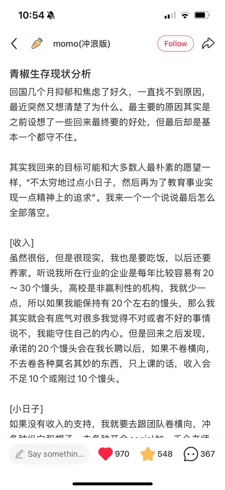
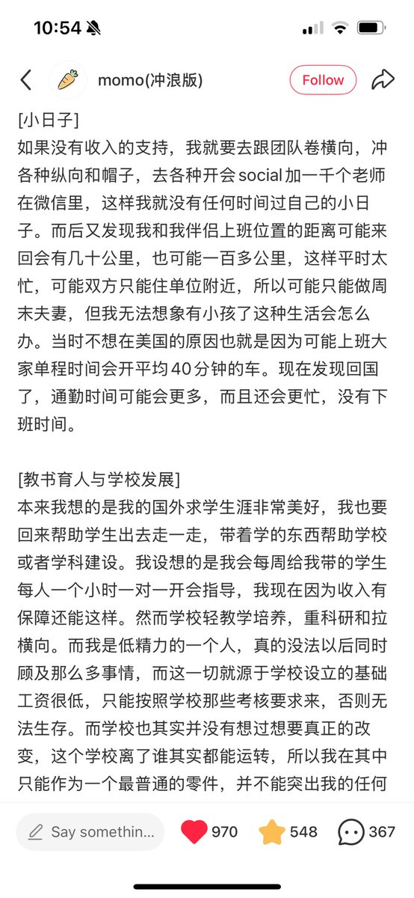
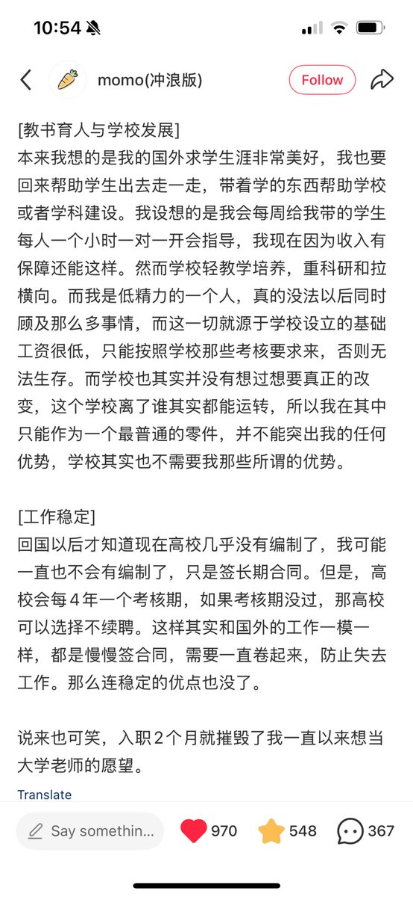
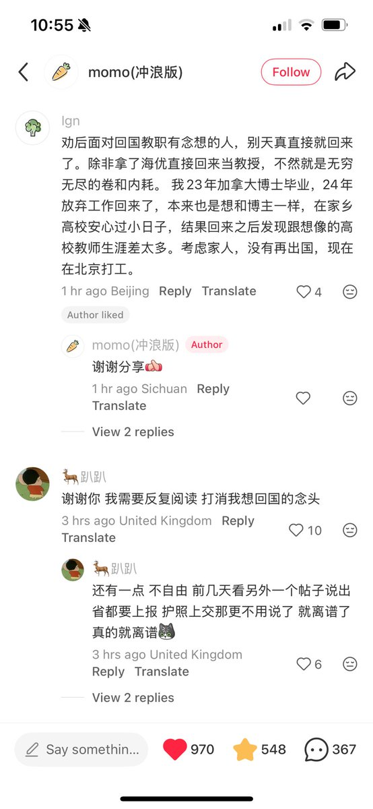

時璃風医詩🌈🏳️🌈
@hagishigure
@garrulous_abyss 就凭欧盟比大多数东亚地区自由就足以成为留在欧盟的理由了…




garrulous abyss🌈
@garrulous_abyss
每次看到这种内容，我都有一个问题啊。
“国内内卷到疯狂”是个人尽皆知的事情。为什么会有人（比如po主）会觉得，“高校”就能是例外呢？
举个例子，如果你处在僵尸横行，或者处处是妖魔鬼怪的世界，你真会觉得，某个村子、小镇、地下庇护所，就能持续的“幸免于难”，世外桃源吗？
当然不能。 https://t.co/5dD5wJBtSB